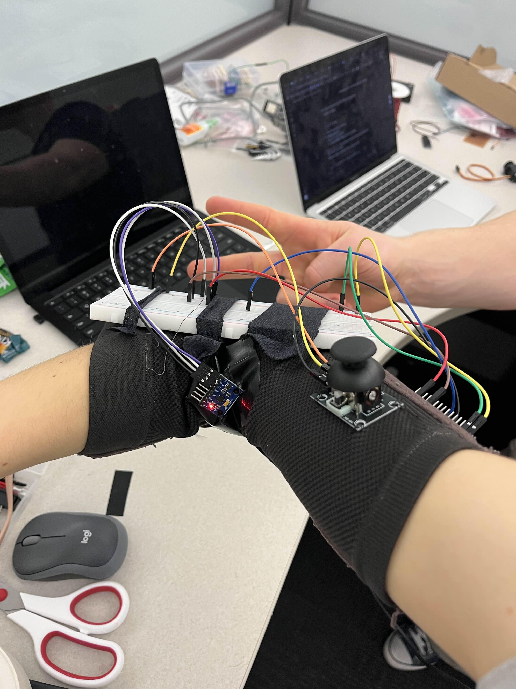
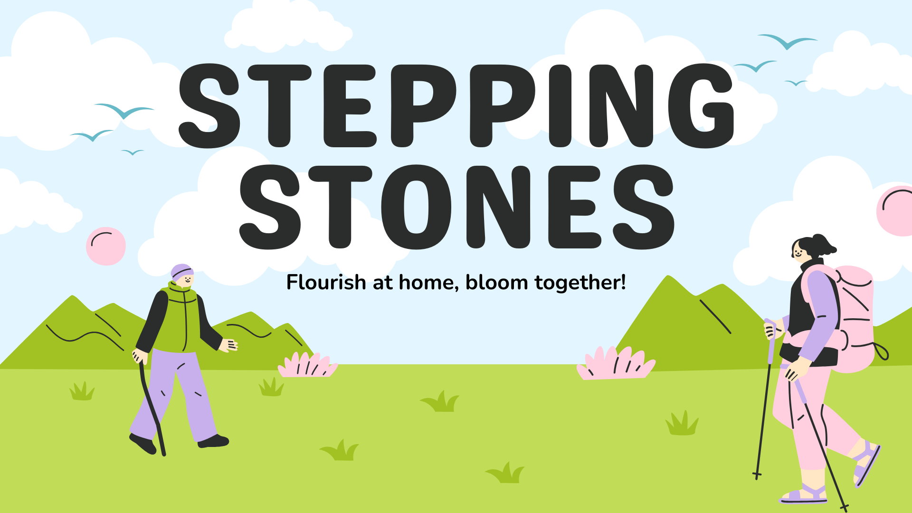

Welcome!
My name is Olha. I am a biomedical engineering student at the University of Waterloo.
Learn More About My SkillsProgramming languages
Used to build software, analyze data, and develop algorithms for embedded systems and biomedical applications.
Embedded Systems
Hands-on experience designing embedded systems, acquiring sensor data, and implementing reliable real-time communication.
Machine Learning
Experience training and evaluating machine learning models while building data processing pipelines.
Signal Processing
Processing and analyzing biomedical signals, extracting meaningful features, and developing real-time signal pipelines.
Design
Designing hardware concepts, prototypes, and clean, user-focused interfaces.
Development Tools
Version control, project organization, and efficient software development workflows.
Projects

JOLT
Forearm band that allows users with upper limb amputations to control a computer mouse using natural arm gestures.
See more →
Stepping Stones
Rehabilitation platform that was developed as a part of health Tech Innovation Challenge.
See more →Mechanical Flower
Mechanical flower project that was created with a team as a part of the univeristy course.
See more →